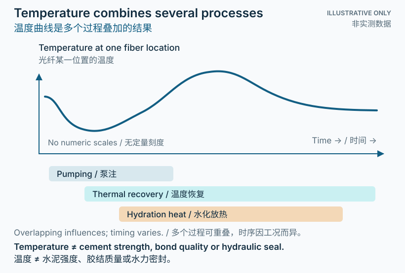

先理解：温度是一条过程线索
水泥与水反应时会释放热量。若光纤能够沿井记录温度，就可以得到一个随深度与时间演化的温度场，观察泵注扰动和放置后的热变化。它有助于提出水泥浆位置或水化进程的解释，但局部温度同时取决于地层、钢材、流体和电缆之间的热交换。[1][3]
放热、水化、凝结和强度发展相互关联，却不是同一个量。 DTS 直接提供经校准的温度估计；从温度特征推断凝结或候凝状态，是需要实验依据和井况约束的解释步骤。温度最高的时刻，既不自动等于凝结时刻，也不直接证明已形成可靠屏障。
最有价值的提问通常不是“曲线上哪一点代表水泥已好”，而是“哪些物理过程能够解释这里的变化，还有什么证据可以区分它们”。
Cement releases heat as it reacts with water. Fiber measurements along the well can produce a depth–time temperature field, revealing pumping disturbances and post-placement thermal changes. This supports hypotheses about slurry placement and hydration development, but local temperature also depends on heat exchange among formation, steel, fluids, and cable.[1][3]
Heat release, hydration, setting, and strength development are related, but they are not the same quantity. DTS directly provides calibrated temperature estimates. Inferring setting or wait-on-cement status requires laboratory evidence and well-specific constraints. The temperature maximum is neither automatically the setting time nor proof of a reliable barrier.
A useful question is: which physical processes could explain this change, and what other evidence distinguishes them?

深入：温度包含放热与散热
可以把局部温度变化理解为水化热源、传导与其他热交换的共同结果。泵入的水泥浆和置换液可能偏离原始地温；停止泵注后，井筒会发生热恢复，水化仍可能继续。光缆与水泥接触状态、距套管中心的位置和径向热路径还会改变所记录的响应。[2][3]
因此，dT/dt 描述测点温度变化速率，并不是直接测得的水化放热速率。只有在明确热传递假设、边界条件及校准关系后，才能把它用作反应发展的代理量。热量也会在轴向和径向传播；温度异常的位置和宽度不必严格等于某一材料界面的位置和厚度。
固定的峰值温度或固定的时间阈值不能跨配方、井况和传感布设直接移用。解释应考虑水泥配方、污染或混合情况、初始与地层温度、井身几何以及运行历史。[1][3]
Local temperature change reflects hydration heat generation together with conduction and other heat exchange. Pumped slurry and displacement fluids can differ from the original geothermal temperature. After pumping stops, thermal recovery and ongoing hydration may overlap. Cable contact, radial position, and the heat-transfer pathway alter the observed response.[2][3]
Consequently, dT/dt is the rate of temperature change at the sensing location, not a direct measurement of hydration heat-release rate. It can serve as a proxy for reaction development only under stated heat-transfer assumptions, boundary conditions, and calibration. Heat also spreads axially and radially; the location or width of a thermal anomaly need not exactly match a material boundary or its thickness.
A fixed peak temperature or timing threshold cannot be transferred indiscriminately between recipes, wells, and deployments. Interpretation should consider formulation, contamination or mixing, initial and formation temperatures, geometry, and operational history.[1][3]
深入：一条可检验的解释流程
- Establish a baseline. Register fiber distance to depth, record sampling settings and reference temperatures, check losses and abnormal channels, and retain the pre-pumping thermal state.
- Align operational records. Synchronize clocks and assemble mixing, pumping, displacement, and returns information. Compare known events with thermal changes.
- Compare intervals and stages. Examine the evolving post-placement temperature, rather than extracting only a maximum. Check neighboring depths, baselines, and possible optical anomalies.
- Test competing explanations. Use actual-slurry laboratory tests, geometry, and an appropriate heat-transfer model to distinguish recovery, hydration, and other processes; report uncertainty.
- Integrate barrier evidence. Interpret results with applicable cement evaluation and pressure or hydraulic verification. Do not turn a thermal indicator directly into a strength or sealing pass criterion.[1][2][3]
深入：不同研究证明了什么
Wu 等（2017）在实验室研究中结合布里渊与瑞利分布式温度／应变观测，并通过热电偶及钻井液污染条件进行比较；这是概念验证，不能直接等同于所有井下条件。Amer 等（2024）比较套管外不同光缆的温度与应变响应，并结合后续水泥胶结测井，突出电缆设计与多源验证的重要性。[1][2]
Hart 等（2025）在深地热井案例中结合拉曼 DTS、DAS／动态应变率观测、作业记录、模型与实验信息，评估水泥放置和水化。三项研究采用的传感实现、尺度和证据层次不同，不能全部当作同一类拉曼 DTS 实验，也不能把个案成功当作普适阈值。[3]
Wu et al. (2017) used combined Brillouin/Rayleigh distributed temperature-and-strain sensing in a laboratory proof of concept, including thermocouple comparisons and drilling-fluid contamination. Amer et al. (2024) compared behind-casing cable responses in a field study and incorporated later cement-bond logging, emphasizing cable design and complementary evidence.[1][2]
Hart et al. (2025) combined Raman DTS, DAS/dynamic strain-rate observations, operating records, modeling, and laboratory information in a deep geothermal case. The studies differ in sensing implementation, scale, and evidence level. They are not interchangeable Raman DTS experiments, and successful cases do not establish universal thresholds.[3]
解释边界：热信号不是密封证明
温度峰值不直接给出抗压强度、胶结强度或水力密封性。 凝结或候凝判断需要经验证的现场关联；单根纵向光纤不覆盖整个圆周，可能遗漏周向缺陷。
本页用于理解测量与推断的区别，不提供现场候凝放行阈值或屏障验收程序。实际决策应结合适用规范、专业工程判断及独立验证。[1][2][3]
A thermal peak does not directly determine compressive strength, bond strength, or hydraulic sealing. Setting or wait-on-cement inference requires a validated site-specific relationship. One longitudinal fiber lacks full azimuthal coverage and can miss circumferential defects.
This page explains measurement versus inference; it does not provide operational release thresholds or barrier-acceptance procedures. Decisions require applicable requirements, qualified engineering judgment, and independent verification.[1][2][3]
参考资料
- Wu et al. (2017) · Advanced distributed fiber optic sensors for monitoring real-time cementing operations and long term zonal isolation原始实验室研究 · Journal of Petroleum Science and Engineering
- Amer et al. (2024) · Distributed fiber optic temperature and strain sensing in cementing and water injection: Insights to well integrity monitoring and multisensing optical fiber cable design原始现场研究 · Gas Science and Engineering
- Hart et al. (2025) · A fiber optic approach for cement placement and hydration assessment of deep geothermal boreholes原始现场研究 · Scientific Reports（开放获取）
学习资料 · 图示非实测数据 · 具体工程决策须结合适用要求和独立验证